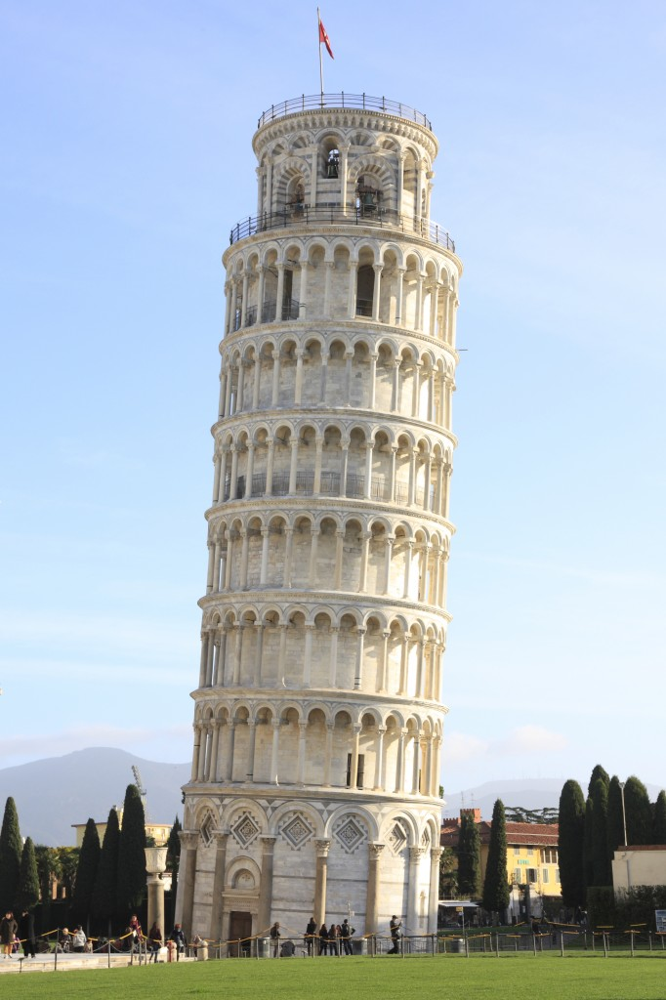
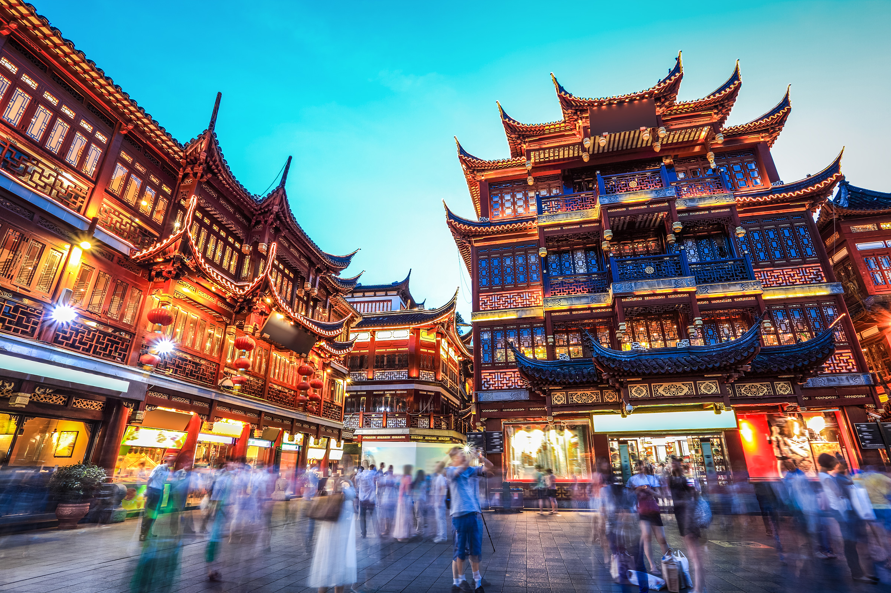
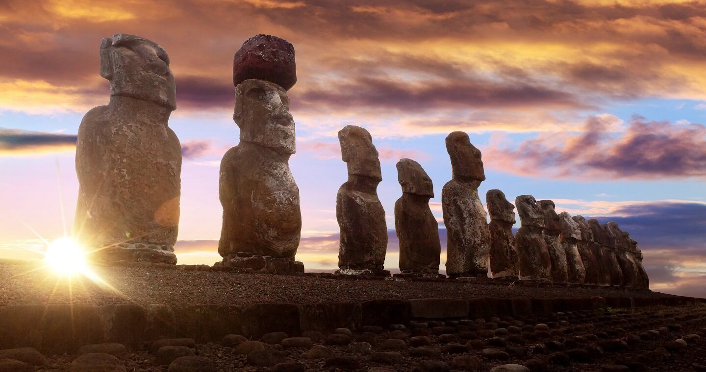

No deja de sorprenderme la increible experiencia que vivi en Bangkok, sin duda es un lugar que no podrás dejar de pasar si tienes alma de viajero. Llamada tambien la ciudad de la alegria eterna, Bangkok le ofrece a sus visitantes construcciones y paisajes unicos, tales como el Gran Palacio, construido en 1798, el cual no podrá faltar en tus primeras visitas del día. Si buscas acción día y noche, la calle Khaosan es sin duda algo que no puedes perderte si realmente quieres encontrar un mercado que tiene todo para ofrecerte. La religion sin duda es una de las cosas más llamativas de un país, y este no es la excepción, todos los Budistas podran visitar el Templo Del Buda o el Templo del amanecer, los cuales junto a muchos otros no dejan de sorprender a la vista por su hermosa y atractiva arquitectura.
Con alma de viajero me gusta conocer distintas partes del mundo, conocer nuevas culturas, religiones y costumbres. Intentar no ser un turista en otro país, sino que uno más, te ayudará a que puedas ver sus secretos lo cual termina por ser lo más atractivo de cada lugar en nuestro hermoso y diverso planeta.